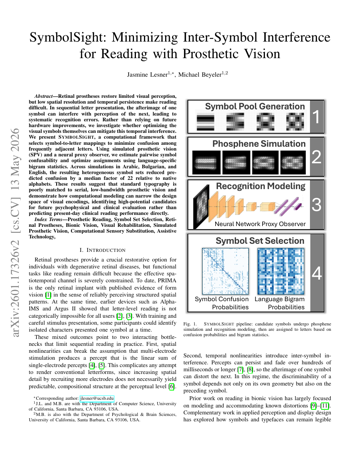
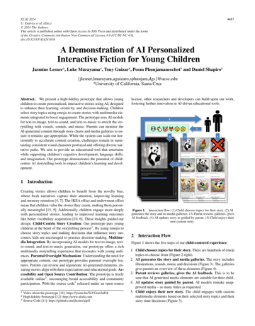
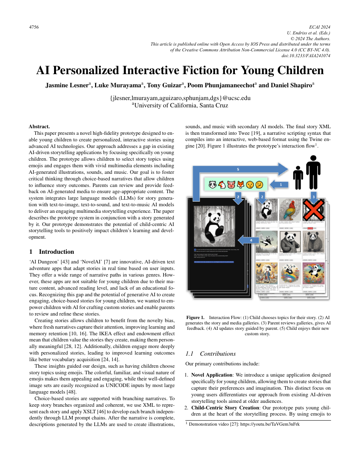
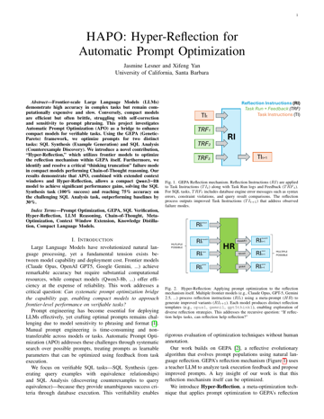
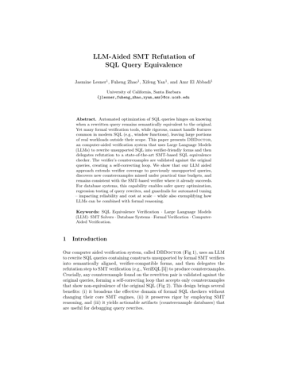
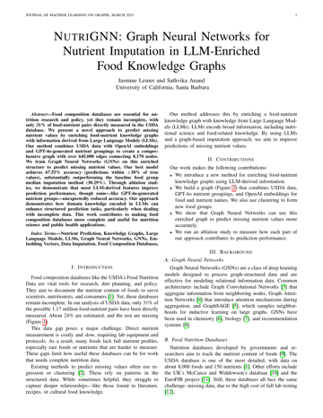
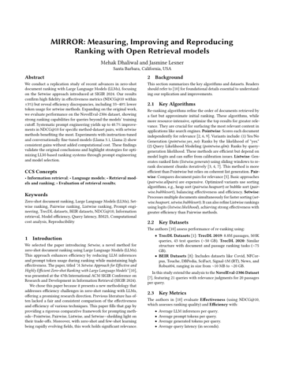
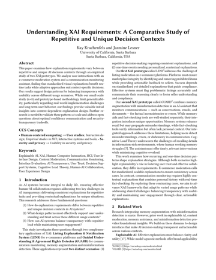
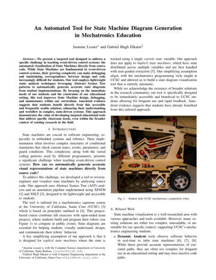

Publications

SymbolSight: Minimizing Inter-Symbol Interference for Reading with Prosthetic Vision
Lesner, J., & Beyeler, M. (2026). IEEE EMBC 2026.

A Demonstration of AI Personalized Interactive Fiction for Young Children
Lesner, J., Murayama, L., Guizar, T., Phunjamaneechot, P., & Shapiro, D. (2024). Frontiers in Artificial Intelligence and Applications: Vol. 392. ECAI 2024 (pp. 4487-4490). IOS Press.

AI Personalized Interactive Fiction for Young Children
Lesner, J., Murayama, L., Guizar, T., Phunjamaneechot, P., & Shapiro, D. (2024). Frontiers in Artificial Intelligence and Applications: Vol. 392. ECAI 2024 (pp. 4756-4763). IOS Press.
Preprints

HAPO: Hyper-reflection for Automatic Prompt Optimization
Lesner, J., & Yan, X. (2025). Manuscript in progress.

DBDoctor: LLM-Aided SMT Refutation of SQL Query Equivalence
Lesner, J., Zhao, F., & Yan, X. (2025). Manuscript in progress.
Reports

NutriGNN: Food Nutrient Prediction with an LLM Enriched Knowledge Graph
Lesner, J., & Anand, S. (2025). Technical Report.

MIRROR: Measuring, Improving, and Reproducing Ranking with Open Retrieval Models
Dhaliwal, M., & Lesner, J. (2025). Technical Report.

Understanding XAI Requirements: A Comparative Study of Repetitive and Unique Decision Contexts
Krachenfels, K., & Lesner, J. (2024). Technical Report.

An Automated Tool for State Machine Diagram Generation in Mechatronics Education
Lesner, J., & Elkaim, G. (2024). Technical Report.